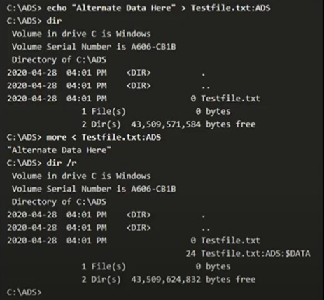

Alternate Data Streams


- Apple'ın işletim sisteminin dosya sistemiyle uyumuluk sağlayabilmesi amacıyla yaratılmış bir özelliktir.Tamamen NTFS özelliği bulunuyor.
- Alternate Data Streams'ı dosya içinde dosya gibi düşünebilirsiniz. Örnek vercek olursak eğer bir dosyanın içerisinde bir dosya var ve biz bu içteki dosyayı çalıştırdığımızda aslında bir üst dizindeki dosyayı da çalıştırmış oluyoruz. Bu büyük bir güvenlik sorununu meydana getirir.Hackerlar bu açıklığı kullanıyorlar. Bununla iligili son zamanlarda virüs programları taramalar yapıyor.